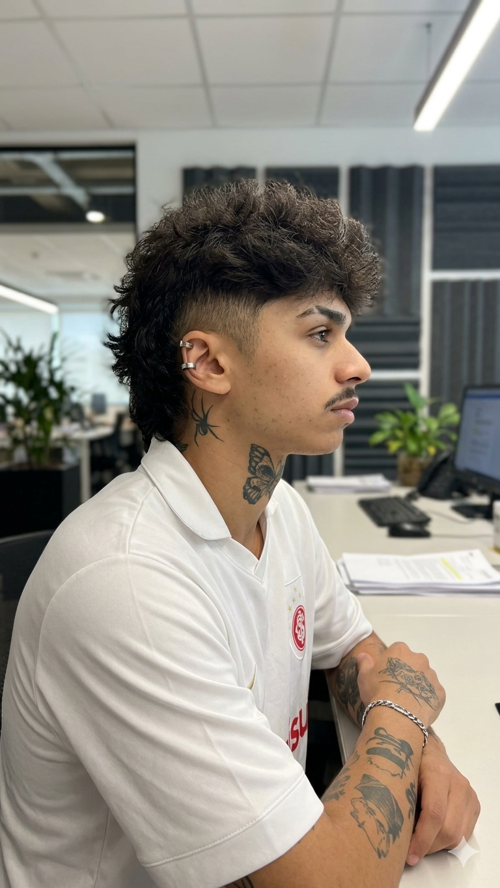

// 01 • COMPUTER ENGINEERING STUDENT
Gianluca,
Engineer &
Game Dev.
I build everything. Currently in my 2nd year of Engineering at FURG, I focus on creating robust software solutions, immersive game mechanics, and efficient automations.
C / C++
Python
C#
Lua
Tailwind / Web
SQL
